第十四课：XIAO ESP32S3 摄像头、图像采集与计算机视觉
前面我们已经学习了数字音频系统，包括 I2S、PCM、DMA、DSP 和 Wi-Fi 音频传输。
现在进入另一个重要领域：嵌入式视觉开发（Embedded Vision）。
这节课仍然以普通版 Seeed XIAO ESP32S3 为唯一主控，不直接套用 Sense 版的摄像头接线。
我们将研究如何给普通版 XIAO ESP32S3 外接摄像头，让它能够：
- 拍摄照片；
- 获取 JPEG 图像；
- 保存图像；
- 通过 Wi-Fi 传输图像；
- 实时输出视频流；
- 进行简单图像处理；
- 进一步运行轻量级视觉算法。
一、先理解摄像头系统的整体结构
摄像头并不是简单地把一根数据线连接到 ESP32-S3 就能工作。
它包含图像传感器、时钟、数据接口、控制总线和数据缓冲区。
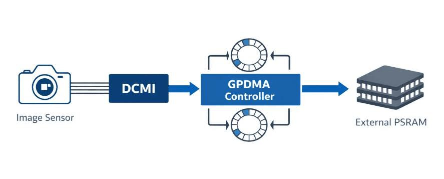
一套典型的嵌入式摄像头系统：
外部光线
↓
摄像头镜头
↓
CMOS 图像传感器
↓
图像像素转换
↓
DVP 并行数据接口
↓
ESP32-S3 LCD_CAM
↓
DMA
↓
PSRAM / RAM
↓
图像处理
↓
JPEG / Wi-Fi / 显示这里有几个重要概念：
| 模块 | 作用 |
|---|---|
| CMOS Sensor | 感知光线并生成像素数据 |
| SCCB | 配置摄像头寄存器 |
| DVP | 传输图像数据 |
| LCD_CAM | ESP32-S3 图像接口控制器 |
| DMA | 搬运图像数据 |
| PSRAM | 保存较大的图像帧 |
| JPEG | 压缩图像 |
| Wi-Fi | 传输图像 |
二、CMOS 图像传感器：摄像头如何感知世界？
普通摄像头内部通常有一个 CMOS 图像传感器。
它由大量感光像素组成。
例如：
- 320 × 240；
- 640 × 480；
- 1600 × 1200；
- 1920 × 1080。
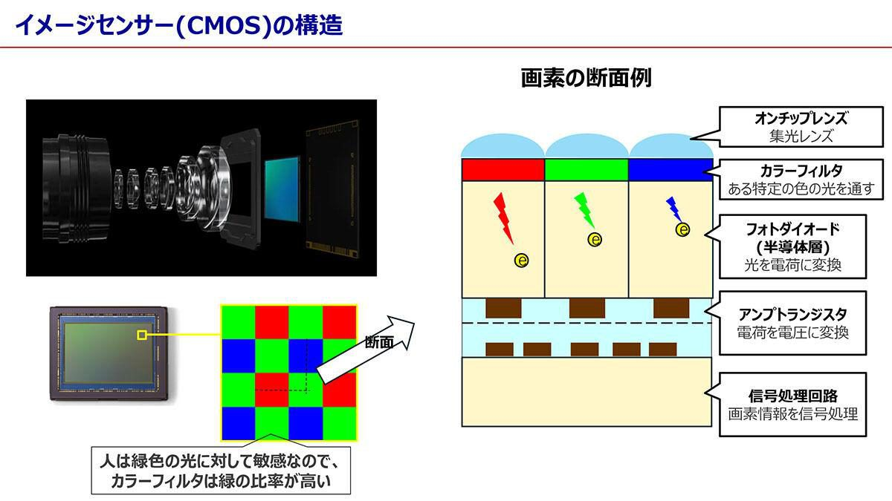
1. 像素是什么？
假设一个摄像头分辨率为：
那么像素数量：
也就是约 30.7 万个像素。
每个像素负责感知一定区域的光线。
2. RGB 图像如何形成？
现实世界中的颜色可以通过红、绿、蓝三个颜色分量进行表示。
例如：
R = 255
G = 0
B = 0代表红色。
R = 0
G = 255
B = 0代表绿色。
R = 0
G = 0
B = 255代表蓝色。
但是 CMOS 传感器通常不会让每个像素直接同时测量完整的 RGB 三个分量。
常见做法是使用 Bayer 彩色滤光阵列，再通过 ISP 或传感器内部处理生成彩色图像。
3. 什么是图像传感器曝光？
曝光决定传感器接收多少光线。
曝光时间过短：
- 图像偏暗；
- 快速运动比较清晰。
曝光时间过长：
- 图像偏亮；
- 快速运动可能产生拖影。
因此摄像头通常具有：
- 曝光控制；
- 增益控制；
- 白平衡；
- 自动曝光；
- 自动增益。
这些通常可以通过摄像头控制寄存器配置。
三、OV2640：适合入门的摄像头模块
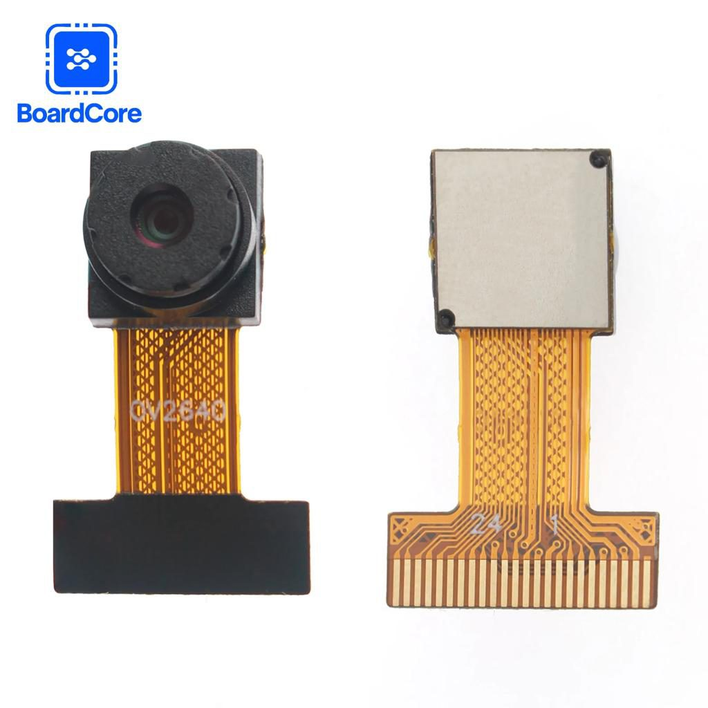
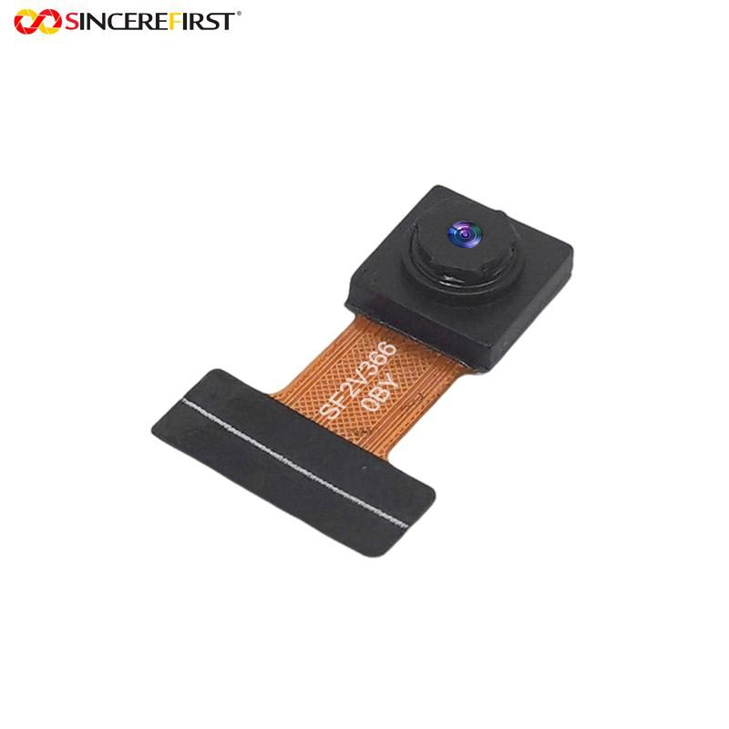
OV2640 是 ESP32 摄像头项目中非常常见的选择。
它的主要特点：
- 最高约 200 万像素；
- 支持 JPEG；
- 支持多种图像格式；
- 可以通过 SCCB 配置；
- 常见模块使用 DVP 并行接口。
注意：摄像头模块的具体供电、引脚排列和输出能力取决于模块设计，购买时需要确认是否为完整的 DVP 模块，而不是仅有传感器芯片的裸模块。
四、SCCB：ESP32-S3 如何配置摄像头？
摄像头不仅需要传输图像，还需要设置内部参数。
例如：
- 分辨率；
- 曝光；
- 白平衡；
- 图像格式；
- 亮度；
- 对比度；
- 特殊效果。
这些配置通常通过 SCCB 完成。
SCCB 是摄像头常见的控制接口，与 I2C 在电气和通信形式上有相似之处，但不能把所有 SCCB 行为都简单等同于标准 I2C。
1. SCCB 的两根主要信号线
| 信号 | 作用 |
|---|---|
| SIOC | 控制时钟 |
| SIOD | 控制数据 |
XIAO ESP32S3
│
├── SIOC ─── Camera
│
└── SIOD ─── Camera摄像头初始化时，ESP32-S3 通过这两根线向传感器写入寄存器。
2. 配置流程
ESP32-S3 启动
↓
初始化 SCCB
↓
读取传感器 ID
↓
确认摄像头型号
↓
写入初始化寄存器
↓
设置分辨率
↓
设置输出格式
↓
启动图像采集3. 为什么摄像头需要读取 ID？
因为不同传感器具有不同的寄存器结构。
例如：
OV2640
OV3660
OV5640它们不能直接使用同一套未经适配的初始化寄存器。
所以驱动通常先读取芯片 ID，再选择对应配置表。
五、DVP：摄像头如何高速传输图像？
DVP 是 Digital Video Port。
这是很多传统嵌入式摄像头使用的并行图像数据接口。
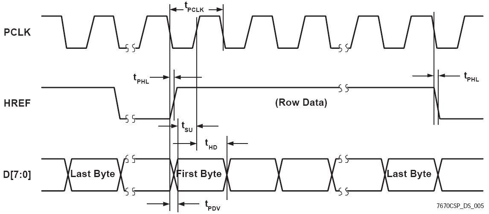
1. DVP 主要信号
| 信号 | 作用 |
|---|---|
| D0～D7 | 图像数据 |
| PCLK | 像素时钟 |
| VSYNC | 帧同步 |
| HREF | 行有效信号 |
| XCLK | 摄像头输入时钟 |
| SIOD | SCCB 数据 |
| SIOC | SCCB 时钟 |
这些信号共同完成图像传输。
2. 数据如何传输？
可以把一帧图像理解为：
Frame
├── Line 1
│ ├── Pixel 1
│ ├── Pixel 2
│ └── Pixel ...
│
├── Line 2
│
├── Line 3
│
└── Line ...摄像头通过 PCLK 提供数据节奏。
ESP32-S3 根据 HREF 判断一行数据是否有效。
VSYNC 用于识别帧边界。
3. 为什么 DVP 需要这么多 GPIO？
因为 DVP 是并行接口。
例如 8 位数据接口，就需要 8 根数据线，再加上同步和时钟信号。
这对普通版 XIAO ESP32S3 是一个重要的硬件限制。
它的物理引脚数量有限，必须提前做好引脚规划。
六、ESP32-S3 的 LCD_CAM 控制器
现在进入芯片内部。
ESP32-S3 并不需要 CPU 自己逐个读取摄像头像素。
它集成了 LCD_CAM 控制器。
这个控制器可以用于摄像头数据接收和 LCD 数据输出等相关工作。
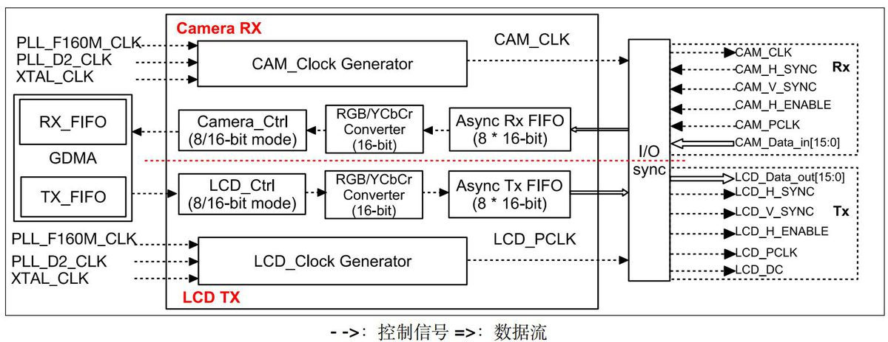
工作流程：
摄像头输出数据
↓
LCD_CAM 接收
↓
DMA 搬运
↓
内存缓冲区
↓
CPU 处理它与前面学习的 UART、SPI、I2S DMA 有相同的设计思想：
让专用硬件负责高速数据传输，CPU 负责配置和处理。
1. 为什么不让 CPU 自己采集每个像素？
假设：
640 × 480 图像。
RGB565 每个像素占 2 字节。
整帧数据：
约 600KiB。
如果 CPU 需要逐像素处理每次数据传输，系统开销会很大。
使用 DMA 可以更有效地处理图像数据流。
七、PSRAM：为什么摄像头系统特别需要外部 RAM？
这是普通版 XIAO ESP32S3 摄像头开发必须理解的问题。
假设你使用：
640 × 480 分辨率、RGB565 格式。
一帧需要：
如果你希望保存两帧：
约 1.17MiB。
这还没有计算 Wi-Fi、FreeRTOS、音频和其他任务所需要的内存。
因此摄像头系统经常使用 PSRAM。
1. 图像帧缓冲区
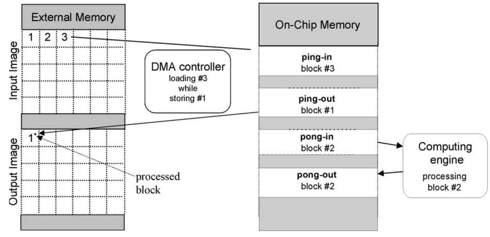
常见结构：
Camera
↓
DMA
↓
Frame Buffer A
↓
CPU 处理
Camera
↓
DMA
↓
Frame Buffer B
↓
网络发送这就是双帧缓冲的思路。
2. XIAO ESP32S3 的 PSRAM
XIAO ESP32S3 系列存在不同硬件版本和存储配置。
不要只根据产品系列名称推断当前板子的 PSRAM 容量。
应当：
- 查看板卡具体型号。
- 检查板卡官方规格。
- 查看 ESP-IDF 启动日志。
- 使用 ESP-IDF 查询实际 PSRAM。
- 确认摄像头驱动能够使用对应内存。
例如：
#include "esp_psram.h"
#include "esp_heap_caps.h"
void print_memory_info(void)
{
printf(
"PSRAM size: %u\n",
(unsigned)esp_psram_get_size()
);
printf(
"PSRAM free: %u\n",
(unsigned)heap_caps_get_free_size(
MALLOC_CAP_SPIRAM
)
);
}这里还需要区分：
- PSRAM 总容量；
- 已初始化容量；
- 当前空闲容量；
- DMA 是否可以访问该内存。
不能简单地认为所有 PSRAM 内存都可以直接作为任意 DMA 缓冲区。
八、图像格式：RGB565、RGB888、YUV422 和 JPEG
摄像头采集到的数据不一定都是 JPEG。
不同格式会直接影响内存、传输速度和 CPU 负载。
1. RGB565
RGB565 使用 16 位表示一个像素。
分配方式：
| 颜色 | 位数 |
|---|---|
| R | 5 |
| G | 6 |
| B | 5 |
| 总计 | 16 |
例如：
uint16_t pixel = 0xF800;代表红色。
特点：
- 数据结构简单；
- 适合 LCD 显示；
- 内存占用较大；
- 需要处理颜色排列和字节序。
2. RGB888
每个像素使用 24 位：
R = 8bit
G = 8bit
B = 8bit优点是颜色表示更丰富，但内存占用更大。
3. YUV422
YUV 将亮度和色度分开表示。
其中：
- Y：亮度；
- U：蓝色色度分量；
- V：红色色度分量。
YUV422 通常每两个像素共享一组色度数据，平均每像素 16 位。
它在视频采集和图像处理领域非常常见。
4. JPEG
JPEG 是一种有损图像压缩格式。
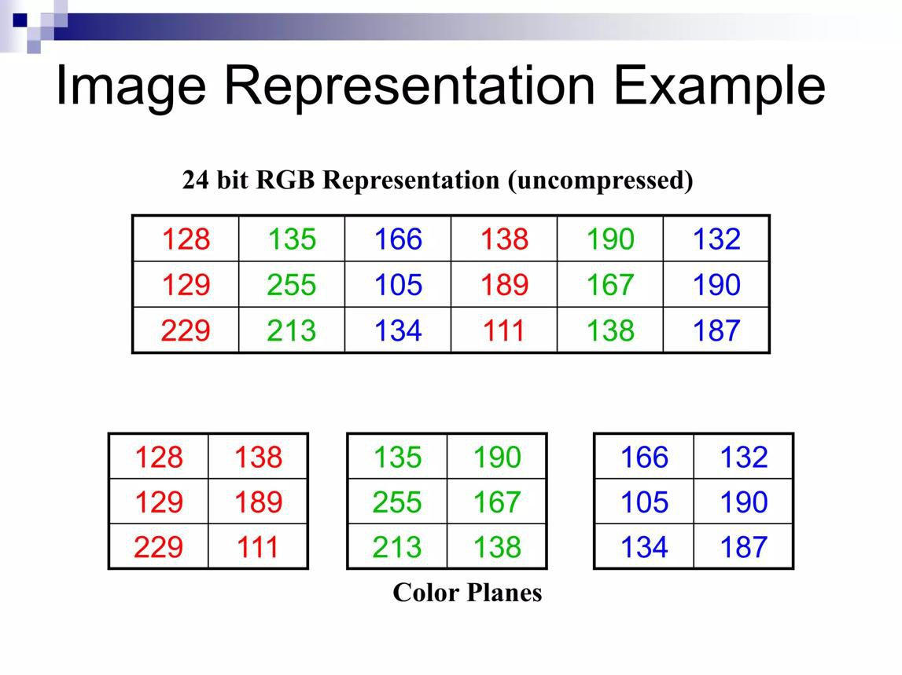
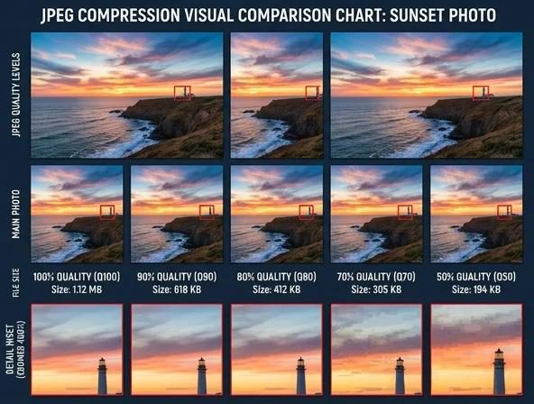
例如，同一张照片：
- RGB565：约 600KiB；
- JPEG：可能只有几十 KiB。
具体压缩大小取决于图像内容、分辨率和 JPEG 质量参数。
5. 不同格式如何选择？
| 使用场景 | 推荐格式 |
|---|---|
| 网络拍照上传 | JPEG |
| LCD 显示 | RGB565 |
| 图像分析 | RGB888 / 灰度 |
| 视频处理 | YUV422 |
| 低带宽传输 | JPEG |
对于 XIAO ESP32S3，建议首先使用 JPEG，而不是直接使用大尺寸 RGB 图像。
原因是 JPEG 可以显著降低内存和网络带宽压力。
九、ESP32-Camera：使用现成驱动控制摄像头
前面我们学习了摄像头底层硬件，现在看看如何使用成熟驱动。
Espressif 提供了开源项目：
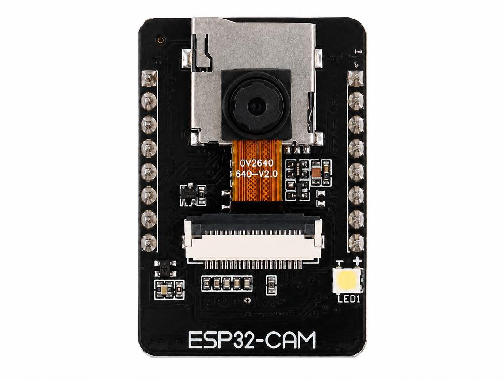
这个项目可以帮助我们省去大量底层工作。
它负责：
- SCCB 配置；
- 摄像头初始化；
- LCD_CAM 数据采集；
- DMA 管理；
- 图像帧缓冲；
- JPEG 数据获取；
- 图像参数配置。
1. 摄像头配置结构
核心结构体：
camera_config_t config;常见配置项：
| 配置 | 作用 |
|---|---|
pin_pwdn | 电源控制 |
pin_reset | 复位 |
pin_xclk | 摄像头时钟 |
pin_sccb_sda | SCCB 数据 |
pin_sccb_scl | SCCB 时钟 |
pin_d0～pin_d7 | 并行数据 |
pin_vsync | 帧同步 |
pin_href | 行有效 |
pin_pclk | 像素时钟 |
xclk_freq_hz | 摄像头时钟频率 |
pixel_format | 图像格式 |
frame_size | 图像尺寸 |
fb_count | 帧缓冲数量 |
fb_location | 帧缓冲位置 |
注意：不同版本的 esp32-camera 结构体字段可能有变化，例如 SCCB 字段名称的调整。应以实际安装版本的 sensor.h、esp_camera.h 为准。
2. 摄像头初始化示例
下面先展示软件结构，不直接给出一套未经核对的 GPIO 接线表。
#include "esp_camera.h"
#include "esp_log.h"
static const char *TAG = "CAMERA";
void camera_init(void)
{
camera_config_t config = {
// GPIO 引脚配置
// 必须填写实际硬件接线对应的 GPIO
.xclk_freq_hz = 20000000,
.pixel_format = PIXFORMAT_JPEG,
.frame_size = FRAMESIZE_QVGA,
.jpeg_quality = 12,
.fb_count = 1,
.fb_location = CAMERA_FB_IN_PSRAM,
.grab_mode = CAMERA_GRAB_WHEN_EMPTY
};
esp_err_t err = esp_camera_init(&config);
if (err != ESP_OK) {
ESP_LOGE(
TAG,
"Camera init failed: 0x%x",
err
);
return;
}
ESP_LOGI(TAG, "Camera initialized");
}这是初始化框架，实际使用前必须补全全部引脚，并确认当前驱动版本支持这些配置。
3. 获取一帧图像
camera_fb_t *fb = esp_camera_fb_get();
if (fb != NULL) {
printf("Width: %u\n", fb->width);
printf("Height: %u\n", fb->height);
printf("Length: %u\n", (unsigned)fb->len);
printf("Format: %d\n", fb->format);
esp_camera_fb_return(fb);
}其中：
width：图像宽度；height：图像高度；len：图像数据长度；format：图像格式；buf：图像数据指针。
这里有一个特别重要的规则：
获取帧缓冲区之后，不要在数据尚未处理完成时就调用 esp_camera_fb_return()。
否则驱动可能重新使用这块缓冲区，导致你读取到被覆盖的数据。
如果需要长期保存图像，应该先复制到自己管理的缓冲区，或者直接保存、发送完毕后再归还帧缓冲区。
十、图像分辨率：如何控制内存占用？
摄像头开发最容易出现的问题之一，就是内存不够。
我们计算几种常见分辨率的 RGB565 原始图像大小。
| 分辨率 | 像素数量 | RGB565 单帧 |
|---|---|---|
| QQVGA 160×120 | 19,200 | 37.5KiB |
| QVGA 320×240 | 76,800 | 150KiB |
| VGA 640×480 | 307,200 | 600KiB |
| SVGA 800×600 | 480,000 | 937.5KiB |
| XGA 1024×768 | 786,432 | 1.5MiB |
这些是未压缩 RGB565 图像的理论数据量。
如果是 JPEG，大小会根据场景和压缩质量变化。
1. 为什么初学者应该从 QVGA 开始？
建议开发顺序：
QQVGA
↓
QVGA
↓
VGA
↓
更高分辨率每一步都验证：
- 摄像头初始化；
- 图像帧获取；
- 帧数据完整性；
- PSRAM 占用；
- JPEG 解码；
- Wi-Fi 传输。
不要一开始就使用最高分辨率。
2. 帧率如何计算？
假设每秒采集 10 帧：
如果每帧 JPEG 平均 40KB：
这还没有计算 HTTP、TCP、Wi-Fi 等协议开销。
因此要根据图像大小和无线网络能力控制帧率。
十一、图像处理：让 ESP32-S3 能够分析图像
现在进入计算机视觉的基础。
摄像头得到图像之后，不只是显示照片，还可以对图像进行分析。
1. 灰度处理
彩色图像可以转换为灰度图像。
常用计算方式：
例如：
uint8_t rgb_to_gray(
uint8_t r,
uint8_t g,
uint8_t b
)
{
return (
299 * r +
587 * g +
114 * b
) / 1000;
}灰度处理能够减少后续图像分析的数据量。
2. 二值化
设置一个阈值：
则像素设置为白色，否则设置为黑色。
uint8_t threshold(
uint8_t gray,
uint8_t value
)
{
return gray > value ? 255 : 0;
}可以用于：
- 简单目标区域提取；
- 黑白标记识别；
- 线条检测；
- 简单图像分割。
3. 边缘检测
图像中的边缘通常表现为亮度变化明显的区域。
常见算法：
- Sobel；
- Prewitt；
- Canny。
例如 Sobel 算法通过计算水平和垂直方向的梯度：
边缘强度越大，说明图像在该位置变化越明显。
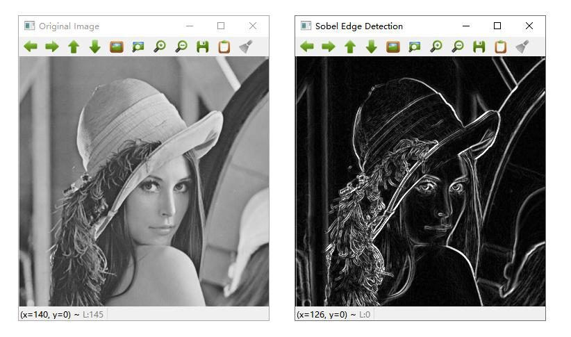
ESP32-S3 可以运行简单的图像处理算法，但分辨率、帧率和算法复杂度需要合理控制。
4. 图像缩放
假设原始图像：
640 × 480缩小到：
160 × 120像素数量减少为原来的：
可以显著降低后续处理开销。
十二、Wi-Fi 图像传输：让 Mac 实时看到 XIAO 的画面
现在将摄像头与前面学习的 Wi-Fi 网络知识结合起来。
建议首先实现 HTTP 单张照片上传，再实现 MJPEG 视频流。
摄像头网络传输架构
1. HTTP 单张照片
工作流程：
Mac 请求 /capture
↓
ESP32-S3 获取一帧
↓
返回 image/jpeg
↓
Mac 浏览器显示这是最适合入门的方式。
2. MJPEG 视频流
MJPEG 是将多张 JPEG 图片连续发送形成的视频流。
典型 HTTP 响应使用：
multipart/x-mixed-replace每一帧都是独立的 JPEG 图片。
浏览器可以连续显示。
3. 为什么先做 JPEG？
因为 JPEG：
- 数据量较小；
- 便于浏览器显示；
- 不需要在 ESP32-S3 上实时进行复杂的视频编码；
- 适合无线网络传输。
4. 网络传输时要注意什么？
不能让摄像头采集任务一直等待网络发送。
建议：
Camera Task
↓
Frame Queue
↓
HTTP Task
↓
Wi-Fi并控制帧缓冲区数量，防止网络发送速度跟不上摄像头采集速度。
十三、视觉开发的下一步：轻量级 AI
当你掌握图像采集、JPEG 和基础图像处理后，可以进一步学习边缘 AI。
ESP32-S3 可以运行一些适合 MCU 的轻量级机器学习模型。
例如：
- 简单图像分类；
- 特定物体检测；
- 人体存在检测；
- 手势识别；
- 条码识别；
- 简单视觉触发。
但需要认识到：
ESP32-S3 并不是桌面 GPU。
它适合小模型、低分辨率和低复杂度任务。
更复杂的目标检测和视觉语言模型，通常需要将图像发送到更强的本地服务器或云端处理。
十四、普通版 XIAO ESP32S3 摄像头开发的硬件限制
这里需要专门强调一下。
普通版和 Sense 版的区别不只是是否有摄像头。
Sense 版本有相应的摄像头连接扩展硬件，而普通版需要自己完成摄像头模块接线和资源规划。
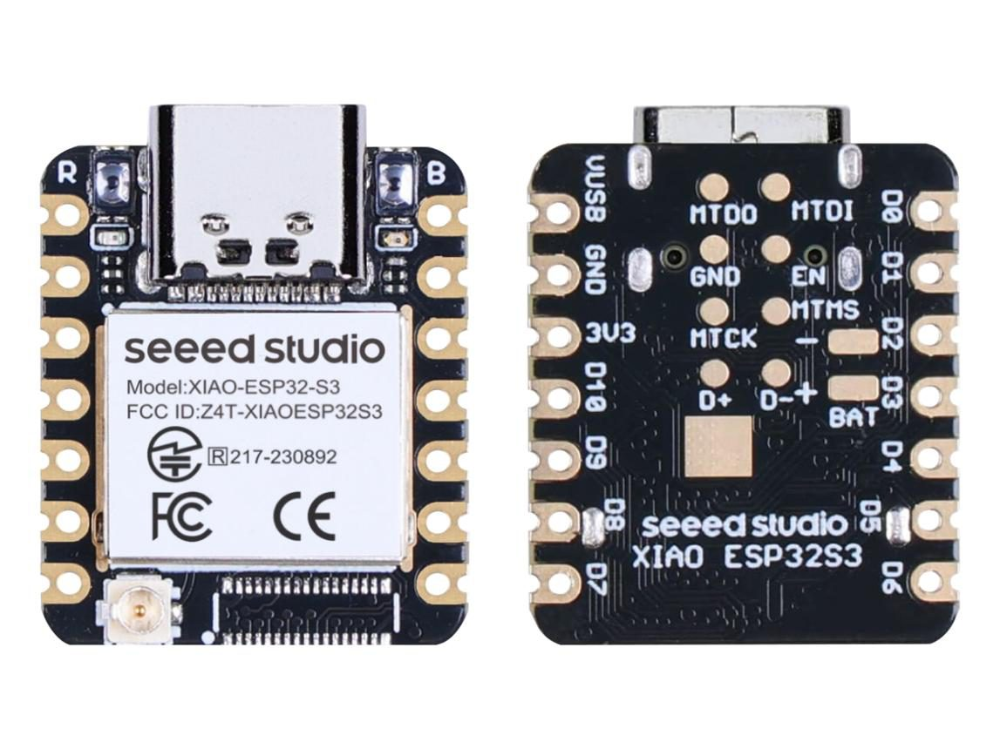
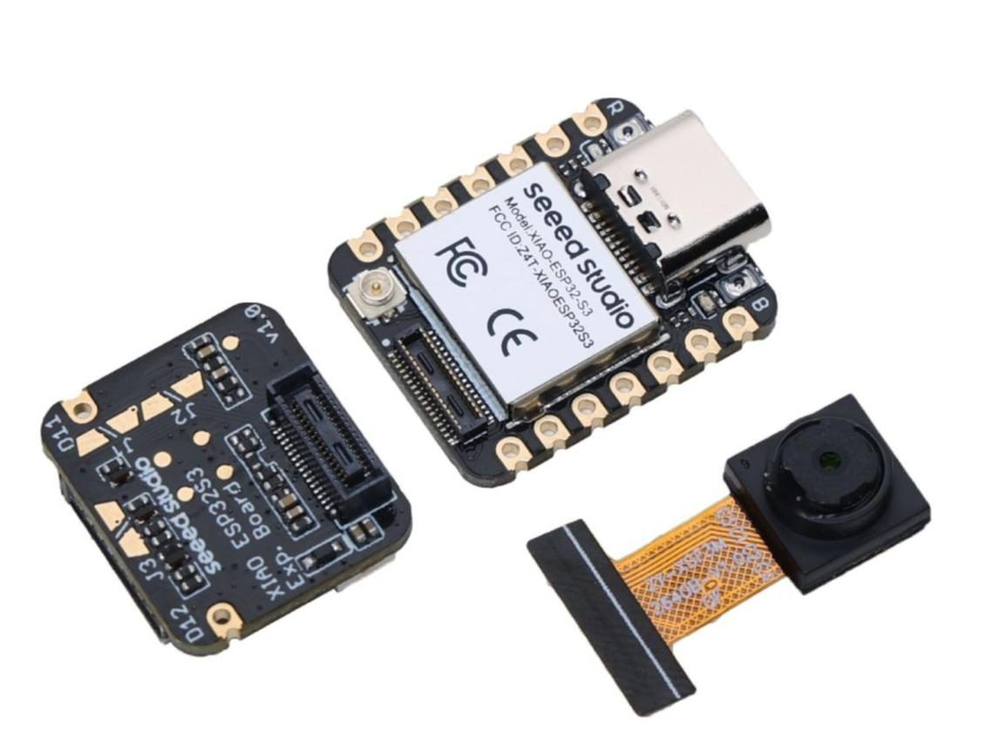
开发前必须核实的四件事
- 你使用的普通版具体硬件版本。
- 板子实际可用 GPIO。
- 外接摄像头模块的完整引脚定义。
- 摄像头 DVP 数据线、时钟和控制线能否全部映射到可用 GPIO。
还需要注意：XIAO 的 USB、启动相关引脚和板载功能可能占用部分资源，不能仅凭 GPIO Matrix 支持灵活映射就认为任意引脚都能使用。
建议先不要购买摄像头，也不要照搬 Sense 的接线图。先核对普通版板卡原理图，再决定是否适合直接连接 OV2640。
十五、实战：建立普通版 XIAO ESP32S3 摄像头实验工程
建议将摄像头开发拆成五个阶段。
| 阶段 | 实验目标 | 验收结果 |
|---|---|---|
| 1 | 摄像头硬件连接 | 能够识别传感器 |
| 2 | 单张照片采集 | 获得完整 JPEG |
| 3 | PSRAM 帧缓冲 | 稳定获取图像 |
| 4 | HTTP 图片服务 | Mac 浏览器查看照片 |
| 5 | MJPEG 视频流 | 连续查看画面 |
1. 工程目录
projects/
└── camera_vision/
│
├── main/
│ └── app_main.c
│
├── components/
│ ├── camera_bsp/
│ │ ├── camera_pins.h
│ │ └── camera_bsp.c
│ │
│ ├── camera_driver/
│ │ ├── camera_init.c
│ │ └── camera_capture.c
│ │
│ ├── image_processing/
│ │ ├── grayscale.c
│ │ ├── threshold.c
│ │ └── resize.c
│ │
│ ├── camera_network/
│ │ ├── http_capture.c
│ │ └── mjpeg_server.c
│ │
│ └── camera_monitor/
│ └── memory_monitor.c
│
├── docs/
│ ├── camera_hardware.md
│ ├── gpio_mapping.md
│ ├── memory_planning.md
│ └── debug_guide.md
│
└── README.md2. 第一阶段：确认摄像头 GPIO
先创建：
// camera_pins.h
#pragma once
// 必须根据实际硬件接线填写。
// 以下只声明配置项，不预设 GPIO 数值。
#define CAMERA_PIN_PWDN (-1)
#define CAMERA_PIN_RESET (-1)
#define CAMERA_PIN_XCLK (-1)
#define CAMERA_PIN_SIOD (-1)
#define CAMERA_PIN_SIOC (-1)
#define CAMERA_PIN_D0 (-1)
#define CAMERA_PIN_D1 (-1)
#define CAMERA_PIN_D2 (-1)
#define CAMERA_PIN_D3 (-1)
#define CAMERA_PIN_D4 (-1)
#define CAMERA_PIN_D5 (-1)
#define CAMERA_PIN_D6 (-1)
#define CAMERA_PIN_D7 (-1)
#define CAMERA_PIN_VSYNC (-1)
#define CAMERA_PIN_HREF (-1)
#define CAMERA_PIN_PCLK (-1)这里故意没有填写一套虚构的接线。
普通版 XIAO ESP32S3 必须先完成引脚资源核对，特别是 DVP 的 8 根数据线和同步时钟信号。
3. 第二阶段：摄像头初始化
完成 GPIO 配置后：
esp_err_t camera_start(void)
{
camera_config_t config = {
// 使用 camera_pins.h 中的实际引脚
.xclk_freq_hz = 20000000,
.pixel_format = PIXFORMAT_JPEG,
.frame_size = FRAMESIZE_QVGA,
.jpeg_quality = 12,
.fb_count = 1,
.fb_location = CAMERA_FB_IN_PSRAM,
.grab_mode = CAMERA_GRAB_WHEN_EMPTY
};
return esp_camera_init(&config);
}4. 第三阶段：拍摄并保存图像
#include "esp_camera.h"
#include "esp_log.h"
void capture_image(void)
{
camera_fb_t *fb = esp_camera_fb_get();
if (fb == NULL) {
ESP_LOGE(
"CAMERA",
"Capture failed"
);
return;
}
ESP_LOGI(
"CAMERA",
"Image: %ux%u, %u bytes",
fb->width,
fb->height,
(unsigned)fb->len
);
// 在这里将 fb->buf / fb->len
// 写入文件或发送网络。
esp_camera_fb_return(fb);
}注意：文件系统写入需要单独初始化 SD 卡或其他存储介质；不能认为 fb->buf 自动就是一个文件。
5. 第四阶段：Mac 查看图像
推荐先实现：
http://设备IP/capture浏览器访问后，ESP32-S3 返回 JPEG 图片。
再增加：
http://设备IP/stream实现 MJPEG 视频流。
十六、给 Codex 的本课开发任务
建议不要让 Codex 直接按照 Sense 版的摄像头配置复制工程。
先让它完成普通版硬件可行性分析。
- 检查普通版原理图。
- 建立 GPIO 资源矩阵。
- 分析 DVP 接线可行性。
- 检查 PSRAM 和 DMA。
- 验证摄像头驱动。
- 输出最终接线图。
- 创建独立摄像头工程。
十七、本课知识验收
十八、下一课：ESP32-S3 边缘 AI 与本地模型运行
前面已经学习了 GPIO、通信外设、ADC、DMA、音频和摄像头。
下一阶段开始进入智能硬件开发的核心：
如何让 XIAO ESP32S3 不仅采集数据，还能够在设备本地进行智能分析？
第十五课：TinyML、神经网络与 ESP32-S3 边缘 AI
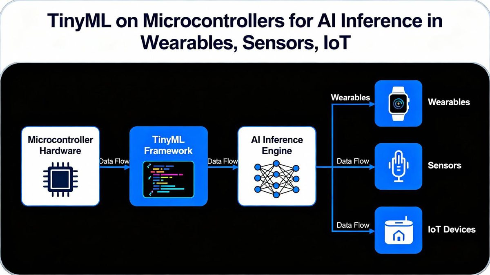
- 人工智能与机器学习的基本原理。
- 神经网络的工作机制。
- CNN 卷积神经网络。
- 模型训练与推理的区别。
- INT8 量化原理。
- Flash、RAM、PSRAM 与模型内存规划。
- TensorFlow Lite Micro。
- Espressif ESP-DL。
- 音频关键词识别。
- 人体和简单图像分类。
- 模型部署与推理性能分析。
- 本地 AI 与云端 AI 协同。
这一课最终要实现什么？
建议完成三个独立实验：
| 实验 | 功能 |
|---|---|
| AI 音频识别 | 识别简单语音关键词 |
| AI 传感器识别 | 判断设备运行状态 |
| AI 图像识别 | 对低分辨率图像进行分类 |
重点学习两个开源生态：
后续学习方向：
XIAO ESP32S3
│
├── 硬件驱动
│
├── 音频采集
│
├── 图像采集
│
├── 数据处理
│
├── 本地 AI 推理
│
└── Wi-Fi 云端通信
│
↓
智能终端产品我的建议是：先完成本地音频关键词识别，再研究图像识别。这样即使普通版 XIAO ESP32S3 的外接摄像头引脚规划还没有完成，也不会影响 AI 学习。
最终，我们要建立的不是单纯的 ESP32 示例代码集合，而是一套覆盖硬件、驱动、操作系统、通信、音频、视觉和边缘 AI 的完整 XIAO ESP32S3 开发知识体系。